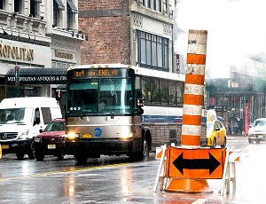

Conheça a fundação de Nova York no século XVII e descubra como se transformou em um dos principais centros financeiros do mundo e a cidade mais povoada dos Estados Unidos.
A praça da Times Square é o coração de Nova York e com os anos se transformou em um símbolo dessa cidade cosmopolita graças às suas luzes e seus chamativos paineis publicitários.

A rede de transporte público de Nova York é muito eficiente e permite se movimentar pela cidade de forma bastante rápida e confortável. Saiba como se locomover por Nova York.
Bairros de Manhattan
Chinatown, Little Italy, SoHo, Chelsea... Cada bairro de Manhattan tem um encanto diferente com uma personalidade muito característica. Conheça-os!
Manhattan está divido em diversos bairros. Os bairros não estão delimitados oficialmente e podem mudar por razões demográficas ou econômicas. Se você ainda não os conhece, é recomendável que conheça antes os diferentes distritos de Nova York.
Vamos dar uma olhada tá nos bairros mais famosos de Manhattan, seja por seu interesse turístico atual ou por sua importância na história de Nova York.
Bairros mais importantes de Manhattan:
chinatown
Chinatown é o lugar de residência de grande parte dos asiáticos que moram em Nova York. Conheça suas ruas, restaurantes e lojas.
Little Italy
Chinatown é o lugar de residência de grande parte dos asiáticos que moram em Nova York. Conheça suas ruas, restaurantes e lojas.
Lower East Side
Chinatown é o lugar de residência de grande parte dos asiáticos que moram em Nova York. Conheça suas ruas, restaurantes e lojas.
SoHo
Chinatown é o lugar de residência de grande parte dos asiáticos que moram em Nova York. Conheça suas ruas, restaurantes e lojas.